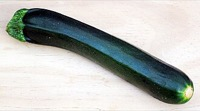

ズッキーニの生産量 都道府県ランキング
全40県の順位と、とれた量
ズッキーニが日本でいちばん多くとれるのは長野県です。3,160 tで、全国（1万200 t）の31%を占めます。

| 順位 | 都道府県 | 収穫量 | 全国に占める割合 |
|---|---|---|---|
| 1位 | 長野県 | 3,160 t | 31% |
| 2位 | 宮崎県 | 1,970 t | 19% |
| 3位 | 群馬県 | 1,760 t | 17% |
| 4位 | 茨城県 | 751 t | 7.4% |
| 5位 | 熊本県 | 386 t | 3.8% |
| 6位 | 宮城県 | 307 t | 3.0% |
| 7位 | 高知県 | 224 t | 2.2% |
| 8位 | 千葉県 | 199 t | 2.0% |
| 9位 | 岩手県 | 181 t | 1.8% |
| 10位 | 栃木県 | 169 t | 1.7% |
| 11位 | 北海道 | 132 t | 1.3% |
| 12位 | 福岡県 | 124 t | 1.2% |
| 13位 | 神奈川県 | 107 t | 1.0% |
| 14位 | 新潟県 | 99 t | 1.0% |
| 15位 | 沖縄県 | 96 t | 0.9% |
| 16位 | 和歌山県 | 78 t | 0.8% |
| 17位 | 京都府 | 58 t | 0.6% |
| 18位 | 福島県 | 50 t | 0.5% |
| 19位 | 兵庫県 | 37 t | 0.4% |
| 20位 | 埼玉県 | 31 t | 0.3% |
| 21位 | 岡山県 | 30 t | 0.3% |
| 22位 | 大阪府 | 29 t | 0.3% |
| 23位 | 愛知県 | 28 t | 0.3% |
| 24位 | 徳島県 | 28 t | 0.3% |
| 25位 | 鹿児島県 | 27 t | 0.3% |
| 26位 | 山梨県 | 26 t | 0.3% |
| 27位 | 静岡県 | 22 t | 0.2% |
| 28位 | 青森県 | 16 t | 0.2% |
| 29位 | 愛媛県 | 12 t | 0.1% |
| 30位 | 秋田県 | 10 t | 0.1% |
| 31位 | 山形県 | 9 t | 0.1% |
| 32位 | 滋賀県 | 8 t | 0.1% |
| 33位 | 奈良県 | 8 t | 0.1% |
| 34位 | 長崎県 | 7 t | 0.1% |
| 35位 | 山口県 | 6 t | 0.1% |
| 36位 | 広島県 | 4 t | 0.0% |
| 37位 | 香川県 | 4 t | 0.0% |
| 38位 | 大分県 | 4 t | 0.0% |
| 39位 | 富山県 | 3 t | 0.0% |
| 40位 | 岐阜県 | 1 t | 0.0% |
この数字について
- 分類：ウリ科
- 全国の収穫量：1万200 t
- この数字が表すもの：収穫量（畑や田でとれた重さ）
- 調査：地域特産野菜生産状況調査 令和6年産
- 40県分を調査（調査していない県は順位に入りません）
ズッキーニの生産量について、よくある質問
- ズッキーニの生産量が日本一の都道府県はどこですか？
- 長野県です。地域特産野菜生産状況調査（令和6年産）で3,160 tでした。
- ズッキーニの生産量ランキング2位・3位はどこですか？
- 2位は宮崎県（1,970 t）、3位は群馬県（1,760 t）です。
- ズッキーニの生産量ランキング4位・5位はどこですか？
- 4位は茨城県（751 t）、5位は熊本県（386 t）です。ズッキーニの全40県の順位は上の表のとおりです。
- ズッキーニの全国の生産量はどれくらいですか？
- 1万200 t（令和6年産）です。